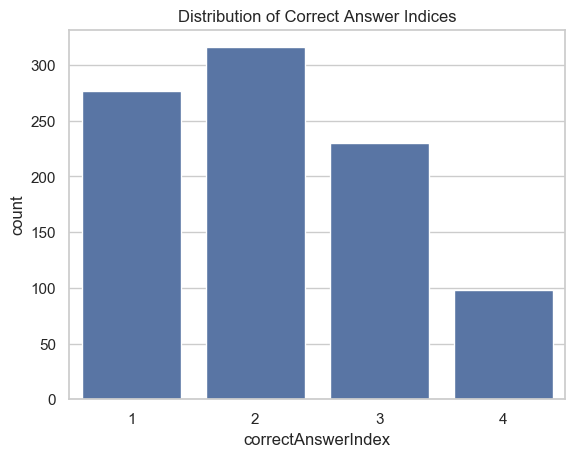
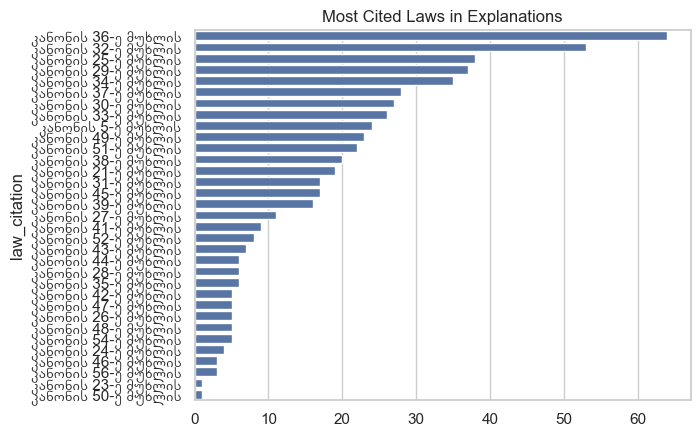
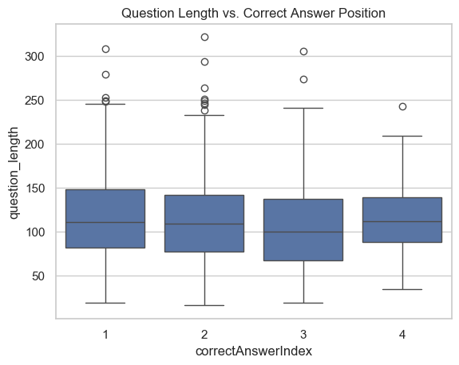

Praktikis Biletebi#
from matplotlib.font_manager import fontManager, FontProperties
import pandas as pd
import seaborn as sns
import matplotlib.pyplot as plt
---------------------------------------------------------------------------
ModuleNotFoundError Traceback (most recent call last)
Cell In[1], line 1
----> 1 from matplotlib.font_manager import fontManager, FontProperties
2 import pandas as pd
3 import seaborn as sns
ModuleNotFoundError: No module named 'matplotlib'
df = pd.read_csv("./results.csv", encoding='utf-8', na_values=['undefined'], keep_default_na=True)
path = r"./arial_geo.ttf"
fontManager.addfont(path)
prop = FontProperties(fname=path)
palette_color = sns.color_palette('pastel')
sns.set_theme(style="whitegrid", font=prop.get_name())
df["id"].duplicated().value_counts()
id
False 921
Name: count, dtype: int64
df["correctAnswerIndex"].value_counts().plot(kind="pie", autopct="%1.1f%%", colors=palette_color, title="Correct Answer Statistics")
<Axes: title={'center': 'Correct Answer Statistics'}, ylabel='count'>
# fix, ax = plt.subplots()
df["imageURL"].value_counts()
# print(imageOrNa)
# ax.pie(imageOrNa, labels=["With Image", "Without Image"], autopct="%1.1f%%", colors=palette_color)
imageURL
https://starti.ge/exam/ticket_media/new/ticketIMG-1.jpg 1
https://starti.ge/exam/ticket_media/new/ticketIMG-712.jpg 1
https://starti.ge/exam/ticket_media/new/ticketIMG-708.jpg 1
https://starti.ge/exam/ticket_media/new/ticketIMG-706.jpg 1
https://starti.ge/exam/ticket_media/new/ticketIMG-698.jpg 1
..
https://starti.ge/exam/ticket_media/new/ticketIMG-317.jpg 1
https://starti.ge/exam/ticket_media/new/ticketIMG-314.jpg 1
https://starti.ge/exam/ticket_media/new/ticketIMG-313.jpg 1
https://starti.ge/exam/ticket_media/new/ticketIMG-312.jpg 1
https://starti.ge/exam/ticket_media/new/ticketIMG-1811.jpg 1
Name: count, Length: 524, dtype: int64
sns.countplot(x='correctAnswerIndex', data=df)
plt.title('Distribution of Correct Answer Indices')
plt.show()

def is_correct_answer_unique_starting_letter(row):
# Extract all non-None answers
answers = [row[f'answers.{i}'] for i in range(4) if pd.notna(row[f'answers.{i}'])]
if len(answers) <= 2:
return None
# Get the starting letters of all answers
starting_letters = [answer[0] for answer in answers]
# Count the frequency of each starting letter
from collections import Counter
letter_counts = Counter(starting_letters)
# Check if all answers except one start with the same letter
if len(letter_counts) == 2 and 1 in letter_counts.values():
# Find the unique starting letter
unique_letter = [letter for letter, count in letter_counts.items() if count == 1][0]
# Find the index of the answer with the unique starting letter
unique_index = starting_letters.index(unique_letter)
# Check if this unique answer is the correct answer
correct_answer_index = row['correctAnswerIndex']
return unique_index == correct_answer_index
return None
# Apply the function to each row
cond = df.apply(is_correct_answer_unique_starting_letter, axis=1)
if cond is not None:
df['is_unique_starting_letter_correct'] = cond
# Calculate the total number of rows where the condition is met
falsy, truthy = df['is_unique_starting_letter_correct'].value_counts()
# Calculate the percentage of rows where the condition is met
percentage_condition_met = (truthy / (truthy + falsy)) * 100
print(f"Total rows where the condition is met: {truthy}")
print(f"Percentage of rows where the condition is met: {percentage_condition_met:.2f}%")
summary_data = {
'Condition': ['Condition Met', 'Condition Not Met'],
'Count': [truthy, falsy]
}
summary_df = pd.DataFrame(summary_data)
# Create the bar plot
plt.figure(figsize=(8, 6))
sns.barplot(x='Condition', y='Count', data=summary_df, hue="Condition", legend=False)
# Add title and labels
plt.title('Analysis of Arsena Method', fontsize=16)
plt.xlabel('Condition', fontsize=14)
plt.ylabel('Number of Rows', fontsize=14)
# Show the plot
plt.show()
Total rows where the condition is met: 59
Percentage of rows where the condition is met: 24.08%
# Extract laws from explanations (e.g., "კანონის 25-ე მუხლის")
df['law_citation'] = df['explanation'].str.extract(r'(კანონის \d+-ე მუხლის)')
law_counts = df['law_citation'].value_counts()
sns.barplot(x=law_counts.values, y=law_counts.index)
plt.title('Most Cited Laws in Explanations')
plt.show()

df['question_length'] = df['question'].apply(len)
sns.boxplot(x='correctAnswerIndex', y='question_length', data=df)
plt.title('Question Length vs. Correct Answer Position')
plt.show()
